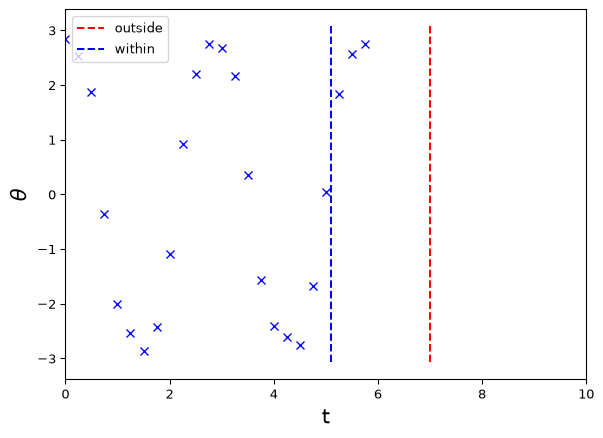
Introduction
What is machine learning? What is engineering? How are they related? These questions are too difficult to answer properly but we can give some brief ideas. You will have seen some of these ideas already in the first part of the course, but we recap them here as they will inform our approach in what follows.
The first key ingredient in machine learning is data. This can be in the form of numerical measurements but could also be text, images, videos and so on. Of course scientists, engineers, and statisticians have been using data long before ‘machine learning’ was a thing (although the term ‘machine learning’ and related terms like artificial intelligence and machine intelligence date back to around the 1950s). Sometimes people say machine learning is nothing but statistics! So, what distinguishes machine learning from other fields that use data? One of the key aspects of machine learning is a focus on prediction or, more generally, performance on a well-defined task in some specific domain, without necessarily being concerned with understanding the domain in the traditional ‘scientific’ sense. Consider for example the following quote from the 2008 Wired article on ‘The End of Theory’ (emphasis added):
Google’s founding philosophy is that we don’t know why this page is better than that one: If the statistics of incoming links say it is, that’s good enough. No semantic or causal analysis is required. That’s why Google can translate languages without actually ‘knowing’ them (given equal corpus data, Google can translate Klingon into Farsi as easily as it can translate French into German). And why it can match ads to content without any knowledge or assumptions about the ads or the content.
Note the above piece highlights the performance of a clearly-defined task in a specific domain – translate given text from one language to another, choose an ad to show when someone visits a website – without explicit ‘knowledge’ of the broader domain (language, advertising psychology). The author of the above piece makes a controverisal comparison to the scientific approach:
The scientific method is built around testable hypotheses. These models, for the most part, are systems visualized in the minds of scientists. The models are then tested, and experiments confirm or falsify theoretical models of how the world works. This is the way science has worked for hundreds of years.
Scientists are trained to recognize that correlation is not causation, that no conclusions should be drawn simply on the basis of correlation between X and Y (it could just be a coincidence). Instead, you must understand the underlying mechanisms that connect the two. Once you have a model, you can connect the data sets with confidence. Data without a model is just noise.
But faced with massive data, this approach to science — hypothesize, model, test — is becoming obsolete \(\dots\)
There is now a better way. [lots of data means we can] say: “Correlation is enough.” We can stop looking for models. We can analyze the data without hypotheses about what it might show. We can throw the numbers into the biggest computing clusters the world has ever seen and let statistical algorithms find patterns where science cannot.”
These are strong claims! How justified are these? And where do engineers fit in?
The Bitter Lesson
A similar but slightly less strong claim about the power of data and computation relative to theory and understanding is made by Richard Sutton in his 2019 essay ‘The Bitter Lesson’:
The biggest lesson that can be read from 70 years of AI research is that general methods that leverage computation are ultimately the most effective, and by a large margin…Seeking an improvement that makes a difference in the shorter term, researchers seek to leverage their human knowledge of the domain, but the only thing that matters in the long run is the leveraging of computation…the statistical methods won out over the human-knowledge-based methods…The recent rise of deep learning in speech recognition is the most recent step in this consistent direction. Deep learning methods rely even less on human knowledge, and use even more computation, together with learning on huge training sets, to produce dramatically better speech recognition systems….This is a big lesson…We have to learn the bitter lesson that building in how we think we think does not work in the long run. The bitter lesson is based on the historical observations that 1) AI researchers have often tried to build knowledge into their agents, 2) this always helps in the short term, and is personally satisfying to the researcher, but 3) in the long run it plateaus and even inhibits further progress, and 4) breakthrough progress eventually arrives by an opposing approach based on scaling computation by search and learning. The eventual success is tinged with bitterness, and often incompletely digested, because it is success over a favored, human-centric approach…The two methods that seem to scale arbitrarily in this way are search and learning.
Is data enough?
The strongest claim above that ‘data are all you need’ is provocative but oversold. One way to illustrate this is to distinguish between passive observation and prediction of a system under given conditions and intervention on a system that changes the conditions.
Example: suppose that you observe the weather every day and record whether it rains or not. You also place a bucket outside and record how full the bucket gets. Clearly there will be a ‘statistical’ or ‘correlational’ pattern/relationship between whether the bucket has water in it and whether it has rained. This means, for example, that if you forgot to look outside during the day but still collected the bucket at the end of the day you could successfully ‘predict’ (or ‘retrodict’) whether it had rained or not. However, suppose then that you wake up and want to go outside for a picnic. If you take the statistical pattern too seriously and have no notion of cause and effect you might think that to prevent it raining you should make sure the bucket doesn’t get full – So you simply cover the bucket and head out for your picnic!
Now, the machine learner may reply that the problem is we haven’t actually collected data on what happens when the bucket is artifically covered. But this is part of the point – one of the reasons we develop scientific theories and mechanistic understanding is to generalise to new contexts and scenarios: our bucket – rain relationship is stable within a limited domain but the laws of physics (presumably) hold throughout the entire universe. Our understanding of cause and effect, accumulated throughout human history, allows us to say that rain causes the bucket to fill but the bucket filling does not cause the rain, without needing to collect additional data.
Despite this warning, the machine learner raises a strong, interesting and potentially bitter point: in many real-world contexts we are interested in the environment is stable enough, the available data is representative enough, and the performance goals well-defined enough that we don’t necessarily need a deep understanding of all the mechanistic processes and causes and effects involved in order to carry out a task well.
Where to?
In this course we will look at the intersection between machine learning and engineering and consider when or how building in engineering and scientific knowledge can help us learn from data in a more data-efficient, robust, and generalisable way, even if only in the short term. After all, we might say that the Engineering Lesson is that we need to solve problems now, with the resources we have, and not wait for the ‘long term’!
Basic setting
In the standard setting of supervised machine learning, we have access to training data, consisting of a series of examples: \[ (x,y)_1, (x,y)_2,\dots,(x,y)_m, \] i.e. \[(x_1,y_1), (x_2,y_2),\dots,(x_m,y_m),\] composed of features (or inputs/covariates) \(x_i\), \(i=1,\dots,m\) and targets (or outcomes/repsonses/labels) \(y_i\), \(i=1,\dots,m\). Both the \(x_i\) and \(y_i\) may be numbers, vectors, functions, images, etc.
The goal is then, e.g., to predict the target \(y_j\) for a new set of features \(x_j\), coming from an unseen or future test dataset or test scenario.
In machine learning, as opposed to statistics or scientific modelling, the aim is typically to make as minimal assumptions as possible on the underlying mechanisms generating the data. However, many standard methods and theoretical frameworks implicitly or explicitly assume that the data is independent and identically distributed (or at least ‘exchangeable’). This is actually a fairly strong assumption, especially for engineering applications!
More generally, the basic conceptual assumption is that the training data is representative of the test data in some sense. Making this precise, without just assuming iid data, is a difficult and often ignored task! However, in scientific and engineering applications, ensuring the training data is representative of the scenarios in which the model will be used is often even more important than usual.
Let’s briefly discuss some basic assumptions on how the data is generated.
Basic types of assumptions
A common assumption is that there is an underlying function \(f\) that maps features to targets: \[y = f(x).\] More generally we might have a noisy mapping such as \[y = f(x) + e\] or, more generally, \[y = f(x,e).\] where \(e\) is an (unobserved) error term.
Even this can be an approximation though! For example, if \(x\) represents time and \(y\) represents the value of some dynamically varying quantity, the above model assumes deterministic dynamics with only observation error.
Such deterministic models are common in engineering applications (e.g. systems governed by ordinary or partial differential equations), but more generally we may wish to use a stochastic process model, in which the dynamics themselves are stochastic.
Stochastic process models
For models in which the dynamics themselves are stochastic or noisy, the models are typically represented (assuming discrete time!) in forms such as \[ y_{t} = f(y_{t-1},y_{t-2},y_{t-3},\dots,e_t) \] i.e. the present (or future) is a function of the past (or past up until the present) and some error term. This is often called an autoregressive model in statistics and machine learning.
This form is itself inspired by scientific modelling: years of experience have taught us that such models are useful ways to capture ideas of ‘cause and effect’ in dynamic systems. E.g. Newton’s laws can be written, once discretised, as a noise-free version of the above.
We can massage this back into our \((x,y)\) format by taking \(x\) to be the ‘history’ \(\mathcal{H}_{t-1}\) of \(y\) up to \(t-1\), i.e. the past (or lagged) values of \(y\): \[ (x,y)_t = (\mathcal{H}_{t-1},y_t) = ((y_{t-1},y_{t-2},...),y_t). \] Now we again have a model in the standard form \[y_t \approx f(x_t) = f(\mathcal{H}_{t-1})\] where the approximation may be represented by additive or non-additive error terms giving stochastic dynamics.
What if we want to repeat the procedure to predict \(y_{t+1}\)? We need to update the history to include both the new \(y_t\) and the past history! This can be thought of as a model of history updating: \[ \begin{aligned} \mathcal{H_t} = (y_t,\mathcal{H}_{t-1}) &= (f(\mathcal{H}_{t-1}),\mathcal{H}_{t-1})\\ &= g(\mathcal{H}_{t-1}). \end{aligned} \]
State space models
The ‘history updating’ idea leads naturally to the ‘systems dynamics’ concept of system state: we define the concept of the state of a dynamic system as the ‘relevant history’ required for predicting the next \(y_t\) value. We can define the state vector at time \(t-1\) as \[z_{t-1} = \mathcal{H}_{t-n:t-1} = (y_{t-1}, \dots, y_{t-n})\] for \(n\geq 1\), and give the state update or process model equation as \[z_t = g(z_{t-1}) = (f(\mathcal{H}_{t-n:t-1}),\mathcal{H}_{t-n+1:t-1}),\] where \(\mathcal{H}_{t_1:t_2} = \emptyset\) if \(t_1 > t_2\). This represents a setting where we only need to remember up to a finite number of past values in order to predict the future, and will hence forget the rest. This is a type of Markovian assumption.
Higher-order differential equations can always be converted to state space or first order form (see MM2/3/4?); for example Newton’s second law is a second-order (in time) differential equation that becomes a system of two first order differential equations for position and momentum when in state space form.
More generally, observation and process noise can be represented in terms of a state space or hidden state model such as: \[ \begin{aligned} y_t &= f(z_t) + e_t\\ z_t &= g(z_{t-1},\epsilon_t) \end{aligned} \] where \(e_t\) is (additive) observation error, \(\epsilon_t\) is (possibly non-additive) ‘process’ error and typically only \((t,y)\) i.e. \(y_t\) is observed. The ‘state space evolution’ describes the dependence of the present on the past and is unobserved. The observation equation describes instantaneous but noisy or indirect observations of the current state.
A deterministic model with observation noise can also be thought of as a special case of the above where there is no process error.
Stepping back: conceptual picture
As we have seen there are many types of dependence assumptions we can make. In general though, we are trying to apply our system in a relatively stable environment that we can imagine is characterised in an engineering sense by a system boundary and fixed system constants denoted here by \(\mu\) (note: these could be e.g. fixed mean, variance of a random environment!).
This gives a rough conceptual picture as below:
where, as discussed, we may need to carefully define our \(x\), \(y\), \(e\), \(\mu\) etc variables depending on what sort of minimal assumptions we are willing to make.
Enough generalities! Let’s consider a specific physical system and how the above ideas can help us use machine learning to approximate and predict it.
The nonlinear pendulum
Many problems in engineering and science are governed by differential equations. For example, the angular motion \(\theta(t)\) of a pendulum with length \(l\) subject to Newton’s laws and no friction or air resistance, is given by \[ \frac{d^2\theta}{dt^2} + \frac{g}{l}\sin \theta = 0 \] with initial conditions \[ \theta(0) = \theta_0,\ \ \frac{d\theta}{dt}(0) = v_0 \] A schematic is shown below.
Derivation: in class! See also MM2 or Greenberg (1998) ‘Advanced Engineering Mathematics’.
Note that this is a nonlinear, second-order ordinary differential equation in time. The solution, \(\theta(t)\), is a deterministic function of time that cannot be given in terms of so-called elementary functions, though it can be solved in terms of elliptic integrals. More complex models, e.g. including forcing or damping, can generate chaotic solutions, and must be solved by numerical simulation.
The linear pendulum
We can also make the small angle approximation \(\sin \theta \approx \theta\) to obtain the linear pendulum model: \[ \frac{d^2\theta}{dt^2} + \frac{g}{l}\theta = 0 \] with initial conditions \[ \theta(0) = \theta_0,\ \ \frac{d\theta}{dt} = v_0 \] This is now a linear, second-order ordinary differential equation in time. The solution, \(\theta(t)\), is again a deterministic function of time.
This has an explicit solution: \[ \theta(t) = \theta_{\text{max}}\cos \left(\sqrt{\frac{g}{l}}t + \phi\right) \] where \(\phi\) is a phase shift term and \(\theta_{\text{max}}\) is the maximum angular displacement, and both these terms depend on the initial conditions. If the initial velocity is zero, this simplifies to \[ \theta(t) = \theta_0\cos \left(\sqrt{\frac{g}{l}}t\right) \] i.e. \(\theta_{\text{max}} = \theta_0\) and \(\phi = 0\).
We will assume zero initial velocity for both the linear and nonlinear pendulumns from now on for simplicity.
Predicting the pendulum
Now, suppose we have \(M\), (possibly noisy) observations of the form \[(t_i,\theta_i),\ i=1,\dots,M\] from a pendulum (possibly nonlinear!) and wish to predict \(\theta_j\) for a new, given \(t_j\). We consider two cases of \(t_j\), one that lies ‘within’ the range of observed data, and one that lies ‘outside’ the observed range. These corresponds to interpolation and extrapolation tasks, respectively.
What can we do? The classical scientific/engineering approach is to directly use our knowledge of the pendulum equations. For example, if we know \(g\) and \(l\), as well as the initial conditions, we can simply solve or simulate our model to obtain \(\theta(t;g,l,\theta_0,v_0) = \theta(t;\mu)\), where \(\mu = (g,l,\theta_0,v_0)\) represents our system parameters (assumed constant here).
If we didn’t know some of our parameters, the classical approach is then extended to first carry out parameter estimation for the parameters given data and then proceed as above with these estimates. This sort of approach is covered in other courses. What does a ‘machine learner’ do instead?
Predicting the pendulum: empirical approach
Here, instead, we want to explore the possibility of working as directly with the data as possible, and see what minimal additional assumptions we can make in order to carry out the prediction task. This can be thought of as empirical modelling, rather than scientific or engineering modelling.
Here are three simple approaches to predicting at the ‘within domain’ time point, i.e. the interpolation problem:
- Find the time point closest to the desired prediction point and use the associated \(\theta\) value.
- More generally, take the average of values associated with the \(K\) closest time points (K-Nearest Neighbours!).
- Fit a machine learning/statistical regression function to the given training points and predict at the new time point using this.
How well does this work? Let’s see!
Predicting the pendulum: interpolation problem
Simple nearest neighbour approaches:
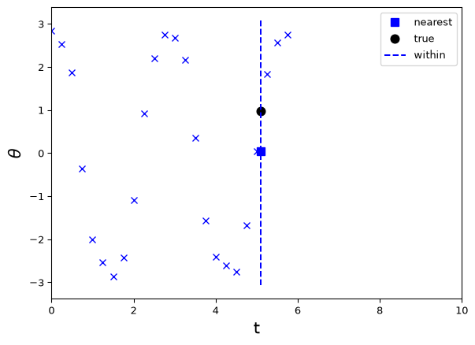
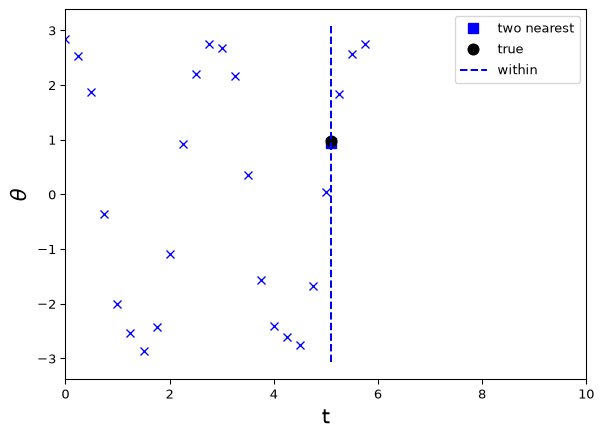
Predicting the pendulum: interpolation problem
Using a simple neural net:
from sklearn import neural_network
regr =neural_network.MLPRegressor(max_iter=5000,
activation='logistic',solver='lbfgs')
X = t_data.reshape(-1,1)
y = y_data
regr.fit(X, y)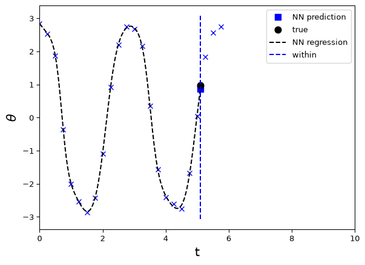
Predicting the pendulum: extrapolation problem
What about the extrapolation problem? Let’s naively try our best previous approaches. First, using two closest time points:
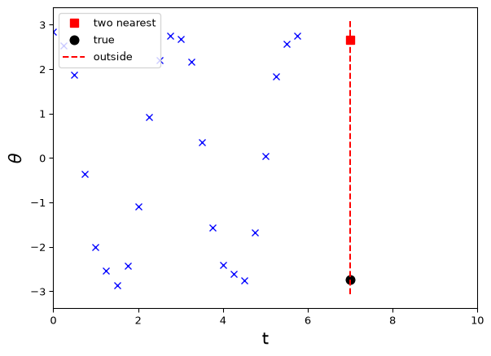
Predicting the pendulum: extrapolation problem
Next, a neural network:
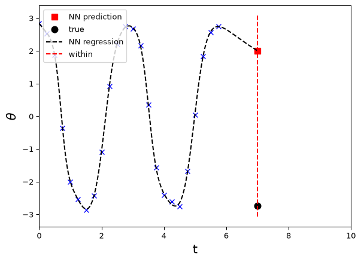
Not particularly good or reliable in either case! The problem is that the time point (or feature) we wish to predict is a priori quite different to the previous points that we’ve seen…
However, it does perhaps seem like we might be able to predict better than we are currently! Why? One answer is that the data appear to exhibit some form of regularity, e.g. approximate periodicity etc.
Can we do better?
Extrapolation problem: simple period-based method
A simple observation is that our data appear somewhat periodic, i.e. \[ \theta(t + T) \approx \theta(t) \] for some period \(T\). This is also obvious from the solution to the ODE model, i.e. our engineering/scientific knowledge!
The time taken for the pendulum to return to its initial value is approximately 2.75 seconds, which is our estimate of \(T\).
In this case, rather than find the closest absolute time point, we could find the closest point ‘within the cycle’, i.e. match to \(t\) modulo \(T\), written ‘\(t\bmod T\)’. Recall that e.g. 7 mod 5 = 2, 14 mod 6 = 2 etc, i.e. we get the remainder when dividing the first number by the second. Our target time, here 7. If our period is about 2.75, then we should take the \(y\) values with \(t\) values closest to about 7 mod 2.75 = 1.5. Let’s try!
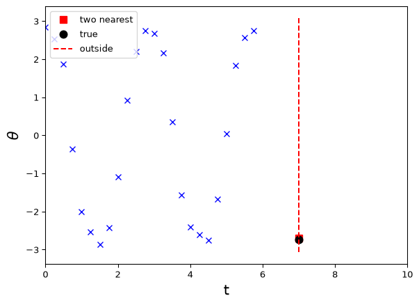
Extrapolation problem: basis functions and features method
The above approach works but requires e.g. a periodic assumption which may not generalise very easily. A related but more general approach is to represent our solution as a linear or nonlinear combination of periodic functions. In the linear case this is a Fourier series!
Approaches to time series based on Fourier methods are called spectral methods; more generally, this is a basis function approach, assuming our function can be easily constructed from linear combinations of a simpler set of basis functions.
Machine learners also call such basis functions features and may consider prediction based linear or nonlinear combinations of these (functional) features.
Motivated by a Fourier cosine series, let’s try using a small collection of features (basis functions) of the form \(\cos \frac{2n\pi t}{T}\), for \(n=1,\dots,4\) (say) and \(T=2.75\) (our estimated period), as features in a linear regression.
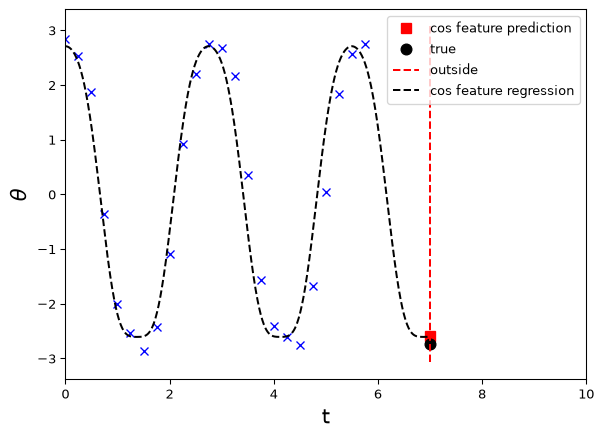
Overfitting, instability etc.
This works reasonably for these particular choices, but depends on the number and type of terms included.
Here’s the same process for \(n=1,\dots,10\). The fit to the observed data is much the same, but our predictions between observations are now much worse (though they happen to still be reasonably good at our actual point of interest).
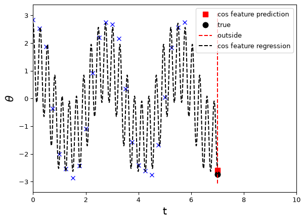
While there are various ways to use and improve spectral methods, let’s consider another alternative.
Extrapolation problem: simple autoregressive model
Suppose we wish to use our knowledge that a pendulum can be modelled by a second order differential equation, but don’t want to derive or solve the equation as such. We can argue as follows. A first order derivative of \(y(t)\) can be approximated (using the ‘past’, i.e. backward differences) by \[ \frac{dy}{dt} \approx \frac{y(t) - y(t-h)}{h} \] Given a differential equation of the form \[ \frac{dy}{dt} = f(y) \] we can thus write this as a simple update rule \[ y(t) \approx y(t-h) + f(y(t-h))h = F(y(t-h)) \] where the present (or future) is given by a an update function \(F\) of the past (or present).
A second order time derivative can be discretised approximately as \[ \frac{d^2y}{dt^2} \approx \frac{\frac{y(t)-y(t-h)}{h}-\frac{y(t-h)-y(t-2h)}{h}}{h} =\frac{y(t) - 2y(t-h) + y(t-2h)}{h^2} \] If we take \(h=1\) for simplicitly, we might expect that a second order system can be approximated by an update rule of the form \[ y(t) \approx F(y(t-1),y(t-2)) \] This motivates us to try a second-order autoregression: build a model to predict the current \(y\) values from its past two values.
Extrapolation problem: simple autoregressive model
In an autoregressive approach of order \(k\) with \(m\) realisations of our primary variable, we effectively have a smaple size of \(m-k\), i.e. the number of ‘(past, present)’ pairs in the data. E.g. for \(m=6\) and \(k=2\) we get four pairs:
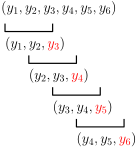
To carry out autoregression, we simply construct a target vector of present values, dropping the first \(k\), and delay feature vectors, each lagging the target vector by one additional increment.E.g. \(\dots\)
Manual lagged features
We can e.g. use np.roll to created lagged features; see below. Note that the future is carrying out its oscillation before the lagged variables, as we want!
k = 2
y_data_target = np.roll(y_data,0)[k:]
X_lagged = np.zeros((len(y_data_target),k))
for i in range(0,k):
X_lagged[:,i] = np.roll(y_data,i+1)[k:]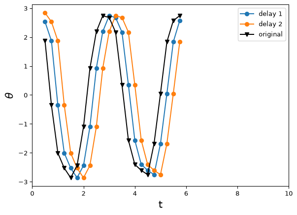
Extrapolation problem: simple autoregressive model
Using X_lagged and y_data_target from above in a linear regression model (we can also do nonlinear\(\dots\)) gives us a model of the form \[
\theta_{t+1} \approx F(\theta_{t},\theta_{t-1}) = a\theta_{t} + b\theta_{t-1} + c
\] i.e. a one-step-ahead prediction model given the two-lag (relative to the prediction) history. How do we predict multiple steps ahead? We iterate the one-step prediction model! (Technically we are iterating the mean to get the predictive mean.)
This works best if we use the state space form to keep track of the current two-lag history required for predicting the next variable and updating to the next relevant history (state): \[ \begin{bmatrix}\theta_{t+1}\\\theta_{t}\end{bmatrix} \approx \begin{bmatrix}F(\theta_{t},\theta_{t-1})\\\theta_{t}\end{bmatrix} = G\left(\begin{bmatrix}\theta_{t}\\\theta_{t-1}\end{bmatrix}\right) \] In our linear case, assuming \(c = 0\) for simplicity, this could be written in matrix form as \[ \begin{bmatrix}\theta_{t+1}\\\theta_{t}\end{bmatrix} \approx \begin{bmatrix} a & b\\1 & 0 \end{bmatrix} \begin{bmatrix}\theta_{t}\\\theta_{t-1}\end{bmatrix} \] Then, applying the predictions sequentially (or recursively), we get the \(n\)-step-ahead prediction as the first component of: \[ \begin{bmatrix}\theta_{t+n}\\\theta_{t+n-1}\end{bmatrix} \approx G(G(\dots G(\begin{bmatrix}\theta_{t}\\\theta_{t-1}\end{bmatrix}))) = G^{n}\left(\begin{bmatrix}\theta_{t}\\\theta_{t-1}\end{bmatrix}\right) \] i.e. for our linear case \[ \begin{bmatrix}\theta_{t+n}\\\theta_{t+n-1}\end{bmatrix} \approx A^n \begin{bmatrix}\theta_{t}\\\theta_{t-1}\end{bmatrix} \] with \[ A = \begin{bmatrix} a & b\\1 & 0 \end{bmatrix}. \]
Extrapolation problem: simple autoregressive model
Let’s predict both the point of interest and a few extra time steps beyond that:
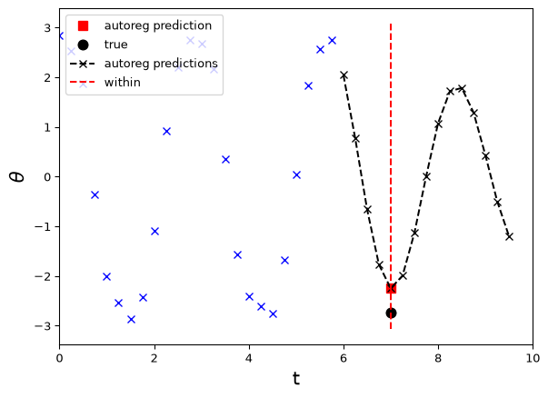
Not bad! It captures the general oscillatory behaviour, though it does seem to be more damped than the true motion. This is not uncommon as we are emphasising fit to the dynamics, sometimes called gradient matching, rather than fit to the trajectory, sometimes called trajectory or integral matching (terms used when fitting ODE models in the classical style).
More sophisticated approaches along these lines include more complex linear models at both the dynamics and trajectory level, as well as nonlinear time series versions. State space approaches are particularly powerful, and lead to Kalman filtering and nonlinear extensions for smoothing and predicting time series.
In addition, the basic concept of autoregression is a key component of modern LLM neural nets like ChatGPT! It essentially predicts the next word based on the input prompt (history).
Assumptions make data representative!
Let’s regroup. What have we learned? We have seen that in order to predict new data we have to make assumptions that go beyond the data.
This is a general lesson that has been known since at least Hume (1739) introduced the problem of induction (likely much much earlier)!
In A Treatise of Human Nature, Hume states:
there can be no demonstrative arguments to prove, that those instances, of which we have had no experience, resemble those, of which we have had experience
The physicist Max Born in Natural Philosophy of Cause and Chance (1949) summarised the problem as:
no observation or experiment, however extended, can give more than a finite number of repetitions; therefore, the statement of a law – B depends on A – always transcends experience. Yet this kind of statement is made everywhere and all the time, and sometimes from scanty material.
There have been a range of proposed resolutions of the problem of induction, from probabilistic proposals to Popper’s argument that science does not need induction, summarised in Conjectures and Refutations (1962):
Hume, I felt, was perfectly right in pointing out that induction cannot be logically justified\(\dots\)Induction, i.e. inference based on many observations, is a myth. It is neither a psychological fact, nor a fact of ordinary life, nor one of scientific procedure\(\dots\)The actual procedure of science is to operate with conjectures\(\dots\)Repeated observations and experiments function in science as tests of our conjectures or hypotheses, i.e. as attempted refutations.
Regardless of one’s preferred approach to the problem of induction, all involve making assumptions (or at least conjectures) to go beyond the available data, whether explicit or implicit.
Features vs architecture vs regularisation
In machine learning, people often talk about ‘inductive bias’ and related types of good, or at least necessary biases. E.g., from Karniadakis et. al (2021):
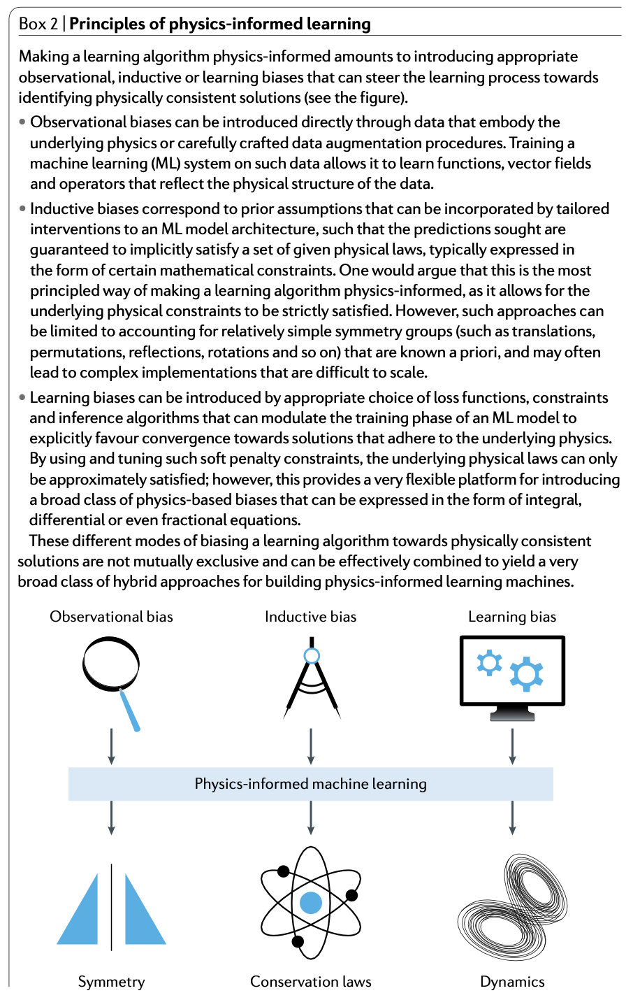
Regularisation and hybrid models
We have given a taste of different ways to make assumptions and improve predictions beyond our immediate data.
For the remainder, we will look in more detail at simple ways to build models and incoporate engineering knowledge. In particular, we are going to focus on what the previous quoted article calls learning bias, which amounts to including physical or engineering constraints in a ‘soft’ (vs. exactly enforced) manner, via penalty or so-called regularisation terms.
Because such an approach includes both a flexible data model and an approximately enforced physical model, we will call these hybrid models (though this term is used by many authors in many ways).
Note: Regularisation and related topics are covered in much more detail in e.g. ENGSCI 721.